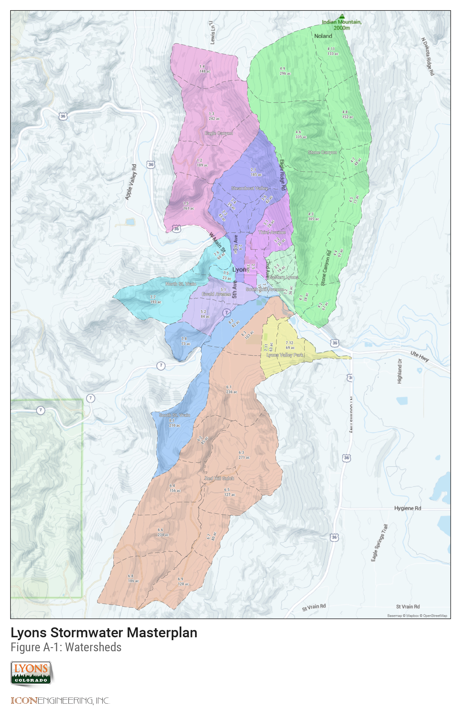
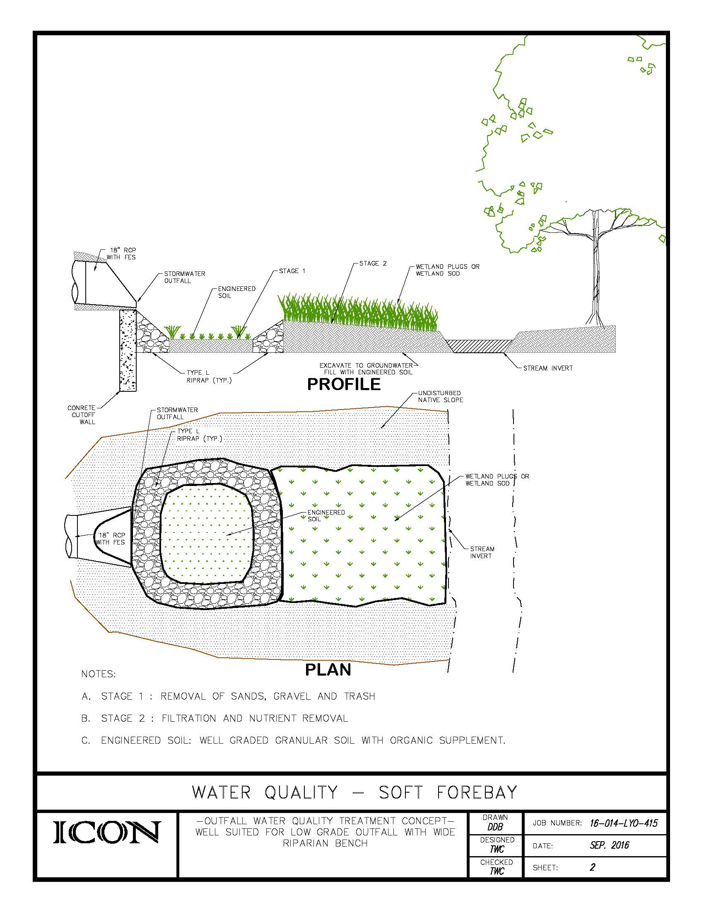
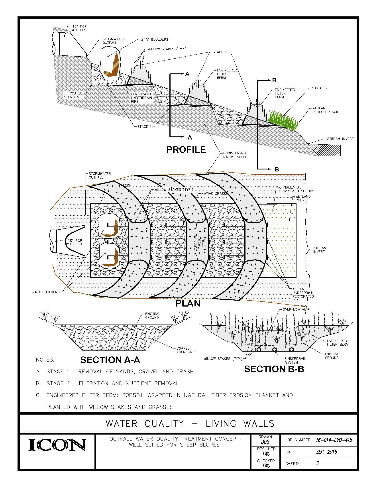

Appendices
Appendix A

Watersheds Map
Appendix B
Hydrology Report (Download PDF)
Appendix C

Problem ID Map
Appendix D

FLO2D Results, 2-year

FLO2D Results, 5-year

FLO2D Results, 10-year

FLO2D Results, 50-year

FLO2D Results, 100-year

FLO2D Results, 120 pct.
Appendix E
Alternative: Red Hill Gulch Lower Channel (Download PDF)
Appendix F
Red Hill Gulch Upper Diversion Channel - forthcoming
Appendix G
Water Quality Outfall Alternatives:

Cascade

Soft Forebay

Living Walls

Rain Garden

Level Spreader
Appendix H
Appendix I
Addendum to USDCM (Download PDF)
Appendix J
SWMM Modeling Files - forthcoming
Appendix K
GIS Data - forthcoming